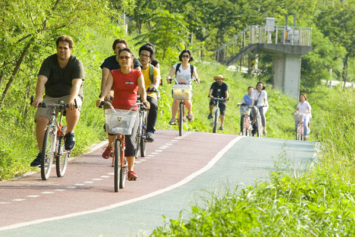
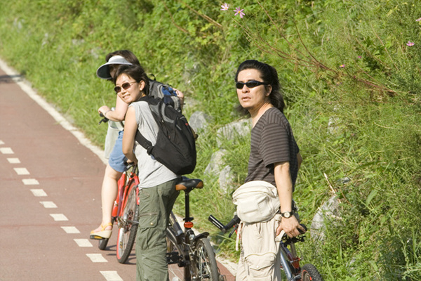

 
8월26일 <두번째 워크샵 strolling> 4시 출발
안양천-한강초입까지 자전거 타며 안양천과 환경에 관련된 이야기를 듣고 실제로 봄.
진행 : 안명균 선생님/ 안양군포환경연합
통역 : 권자연 / 이대일 사진 : 성백달 자원봉사자
8/26 <workshop 2 -strolling> 4pm
Bike ride from Anyang River-Han River / heard and saw the ecology of Anyang River
Directed by Myung-Gyun Ahn / Anyang Kunfo Uwnag Federation for Environmental Movements
translaor : jayeon Kwon / Daily photo : Baek-Dal Sung volunteer
2008-09-09
saptap.egloos.com 에서 옮김